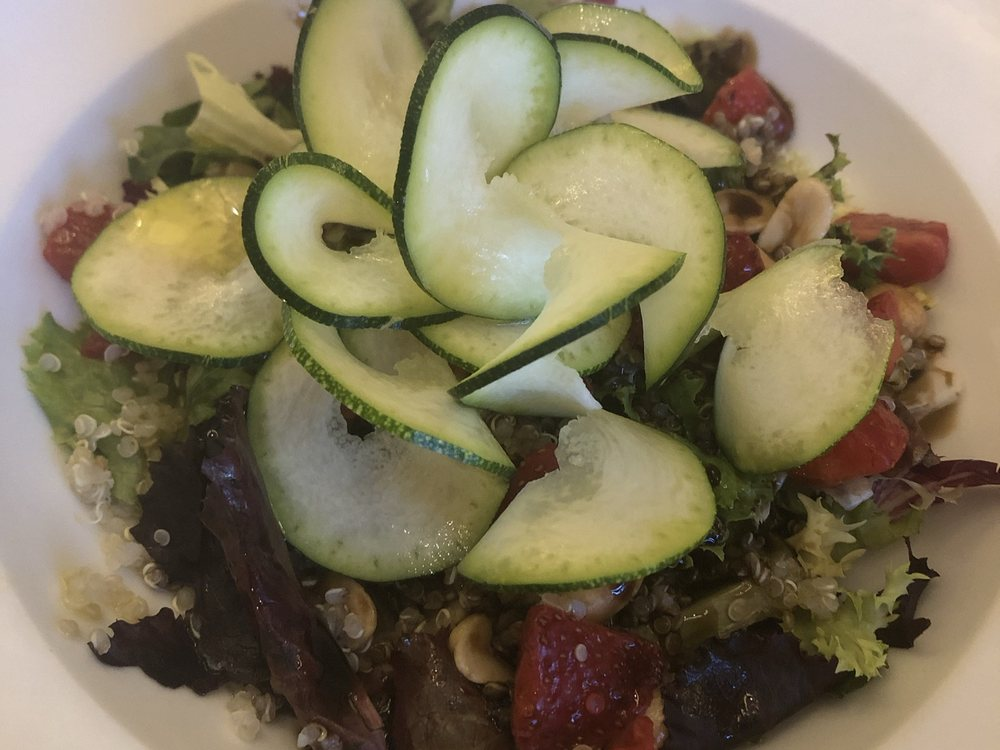
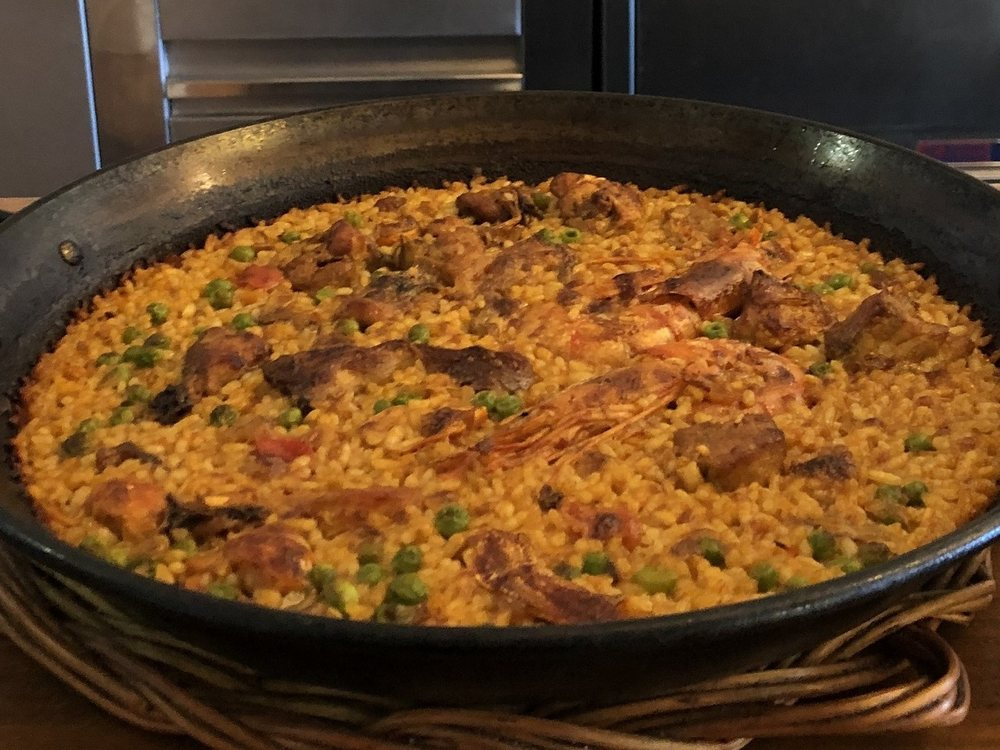

Cada diaEl menú diari
De dilluns a divendres al migdia. El publiquem aquí mateix, i també a Instagram i a Facebook.
Veure el menú d'avui →
Inici · La carta
Cuina catalana i de mercat. Els plats de sempre i els que van i venen amb la temporada.
Al·lèrgies i intoleràncies: aviseu-nos en reservar o en arribar i us direm plat per plat què podeu menjar. Els distintius d'aquesta carta són orientatius; la informació bona és la que us donarem a taula.

Cada diaDe dilluns a divendres al migdia. El publiquem aquí mateix, i també a Instagram i a Facebook.
Veure el menú d'avui →
Per emportarPodeu endur-vos qualsevol plat de la carta i del menú diari. Truqueu-nos amb una mica d'antelació i us ho tenim a punt.
Com funciona →De dilluns a diumenge. Qualsevol plat de la carta i del menú diari se'l poden endur, amb els mateixos preus que a taula.
Les comandes es fan per telèfon. Truqueu-nos amb una mica d'antelació —mitja hora per a un plat, més si sou colla— i us ho preparem.
De dilluns a dissabte de 9:00 a 00:00 i diumenge de 9:00 a 18:00.
Per a comunions, bateigs, aniversaris de noces i dinars d'empresa fem menús a part, adaptats al que necessiteu i al saló que trieu.